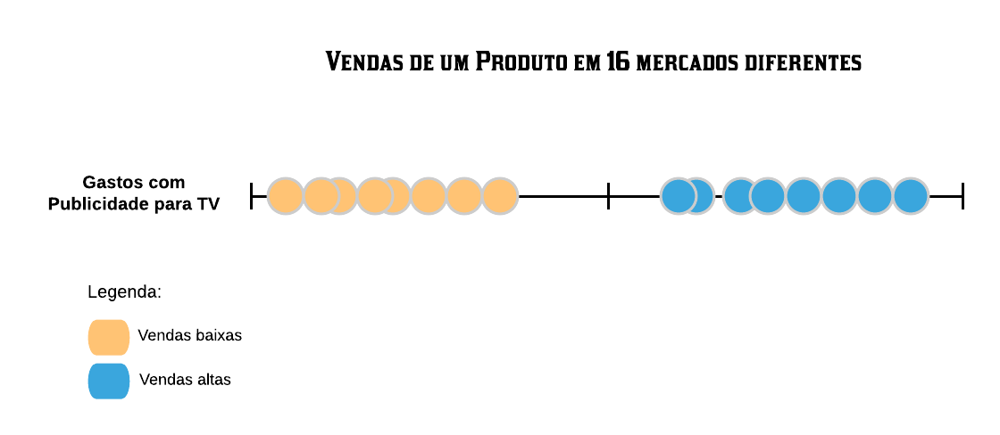
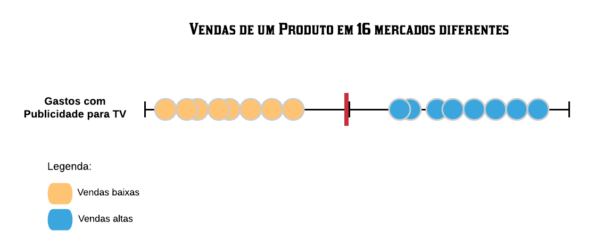
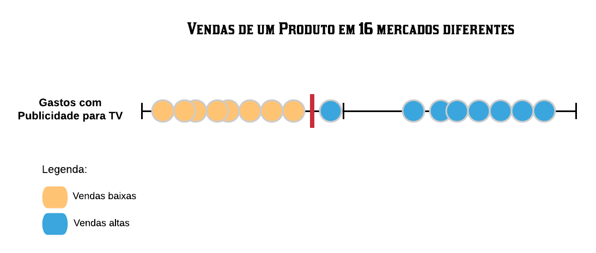
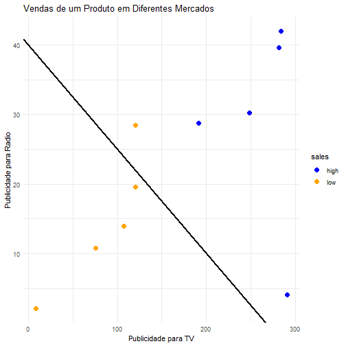
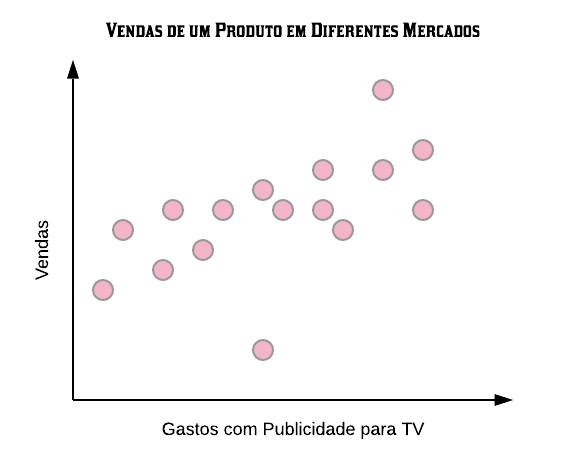
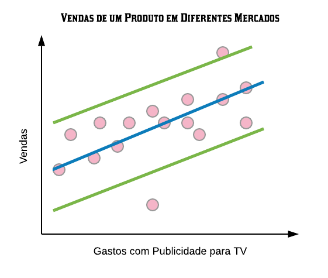
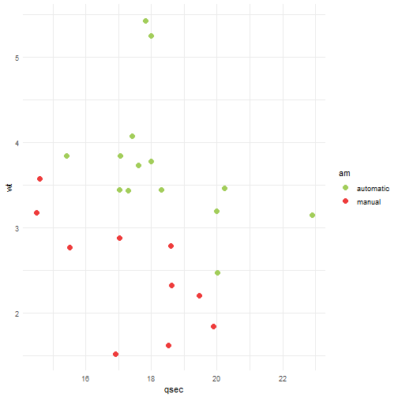
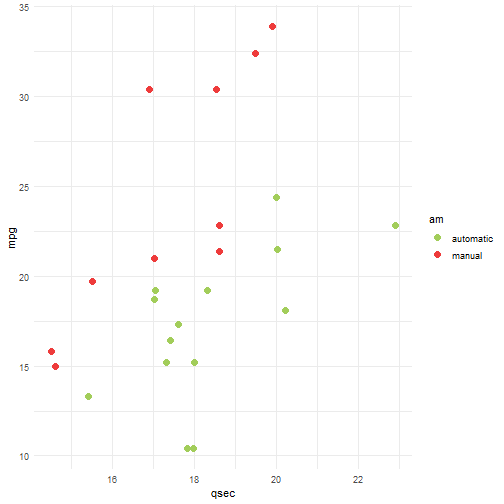

Neste capítulo estudaremos alguns métodos não baseados em árvores que também são muito importantes e utilizados em machine learning: Support Vector Machine (SVM) e K-Nearest Neighbors (KNN). Veremos como os modelos funcionam na teoria com alguns exemplos e em seguida iremos implementá-los computacionalmente utilizando a linguagem R.
11.1 Support Vector Machine (SVM)
O Support Vector Machine - ou Máquina de Vetores de Suporte - é um algoritmo de aprendizado supervisionado que analisa os dados e os divide em diferentes grupos, de acordo com seus padrões, para assim classificar as observações. É mais utilizado em problemas de classificação, o qual será o maior foco deste capítulo, mas também pode ser utilizado para regressão.
11.1.1 em Classificação
Para entender como esse método funciona, vamos utilizar a seguinte situação: queremos verificar se as vendas de um produto em diferentes mercados foram altas ou baixas baseado nos gastos com publicidade desse produto para TV. Para tal temos a amostra treino abaixo:

Podemos observar que os mercados que possuíram um maior investimento em publicidade tiveram maiores vendas, estando naturalmente agrupados mais à direita do gráfico. O objetivo do algoritmo é criar um classificador no formato de um separador, ou seja, um ponto que melhor separe os dados entre os que foram classificados como baixas ou altas vendas, de acordo com os gastos com publicidade.
Esse separador é criado como sendo o ponto médio entre os elementos de cada grupo. Dessa forma, é natural perceber que o melhor separador para a amostra é a média entre o mercado que obteve a maior venda dentre os que tiveram baixas vendas e o mercado que obteve a menor venda dentre os que tiveram altas vendas (as bordas de cada agrupamento).

Assim, quando novas amostras chegarem para serem analisadas, podemos classificá-las de acordo com nosso classificador. Se ela tiver à esquerda dele será classificada como vendas baixas e se tiver à direita como vendas altas.
Definição 1: a menor distância entre o classificador e as observações utilizadas para calculá-lo é chamada de margem.
Como nosso classificador está no ponto médio entre os dois elementos da borda de cada grupo, a margem é a distância de uma dessas observações até ele. Caso ele estivesse mais à esquerda, por exemplo, a margem seria a distância entre ele e o elemento que está na borda do agrupamento das vendas baixas.
Definição 2: o classificador que dá a maior margem para fazer classificações é chamado de classificador de margem máxima.
O classificador de margem máxima performa bem em bases onde os elementos estejam bem agrupados, mas ele se torna um classificador falho quando a base possui outliers. Por exemplo, se um dos mercados do nosso conjunto treino gastou pouco com publicidade para TV, mas obteve vendas altas, o classificador de margem máxima estaria muito próximo ao agrupamento das vendas baixas.

Dessa forma, novas amostras à direita do classificador seriam classificadas como vendas altas, mesmo que elas estivessem mais próximas ao grupo das vendas baixas. Ou seja, isso implicaria em muitos erros de classificação.
Para melhorarmos essa situação precisamos de um classificador que não seja tão sensível a outliers. Para isso teremos que permitir alguns erros de classificação no conjunto treino, aumentando o viés do classificador para que, assim, quando o algoritmo receber novas amostras, a variância dele seja menor.
Definição 3: Quando é utilizado um classificador que permite erros de classificação, a distância entre ele e os elementos utilizados para obtê-lo é chamada de margem suave.
Como temos várias margens suaves a se considerar, o algoritmo utiliza cross validation para determinar qual é a melhor delas, escolhendo o melhor separador para ser utilizado.
Definição 4: As observações utilizadas para calcular a margem suave são chamadas de support vectors (vetores de suporte).
Definição 5: O classificador escolhido quando é utilizado a melhor margem suave é chamado de classificador de margem suave ou support vector classifier (classificador de vetor de suporte).
Vamos adicionar agora mais uma variável ao nosso problema. Queremos analisar as vendas do produto com base nos gastos com publicidade para TV e nos gastos com publicidade para o rádio.
# A tibble: 10 × 4
TV radio newspaper sales
<chr> <chr> <chr> <chr>
1 8.6 2.1 1 low
2 75.5 10.8 6 low
3 107.4 14 10.9 low
4 120.2 19.6 11.6 low
5 120.5 28.5 14.2 low
6 191.1 28.7 18.2 high
7 248.4 30.2 20.3 high
8 281.4 39.6 55.8 high
9 283.6 42 66.2 high
10 290.7 4.1 8.5 high
Note que à medida que os gastos com publicidade nas duas mídias aumentam, as vendas do produto também aumentam. Vamos verificar graficamente o comportamento dessas variáveis.
library(dplyr)
Anexando pacote: 'dplyr'
Os seguintes objetos são mascarados por 'package:stats':
filter, lag
Os seguintes objetos são mascarados por 'package:base':
intersect, setdiff, setequal, union
library(ggplot2)# Transformando a variável resposta em fator:vendas$sales =as.factor(vendas$sales)# Transformando as demais variáveis em números:vendas =mutate_if(vendas, is.character, as.numeric)# Desenhando o gráfico:vendas %>%ggplot(aes(x = TV, y = radio, color = sales)) +geom_point(size =3) +theme_minimal() +ggtitle("Vendas de um Produto em Diferentes Mercados") +xlab("Publicidade para TV") +ylab("Publicidade para Radio") +scale_color_manual(values =c("blue", "orange"))
Repare que as amostras, assim como anteriormente, estão agrupadas em clusters. E, novamente, para escolher o melhor classificador, o algoritmo irá utilizar cross validation para determinar qual é a melhor margem suave. Como o problema possui duas variáveis, o support vector classifier será uma linha dividindo os dois grupos.

Assim, as novas amostras que estiverem à direita da linha serão classificadas como vendas altas, e as que estiverem à esquerda como vendas baixas.
Agora vamos adicionar uma terceira variável, ou seja, vamos levar em conta também a terceira coluna da base de dados, os gastos com publicidade para os jornais. Vamos verificar o comportamento das variáveis graficamente.
# Pacote para plotar gráfico de pontos em 3 dimensões:library(scatterplot3d)# Escolhendo as cores dos pontos:cores =c("blue", "orange")# Colorindo-os de acordo com as classificações das vendas:cores = cores[as.numeric(vendas$sales)]# Desenhando o gráfico:scatterplot3d(vendas$TV, vendas$radio, vendas$newspaper, color = cores, pch =19,xlab ="Publicidade para TV", ylab ="Publicidade para Radio",zlab ="Publicidade para Jornais", main ="Vendas de um Produto em Diferentes Mercados")# Adicionando legenda ao gráfico:legend("top", legend =c("Vendas baixas", "Vendas altas"), col =c("orange", "blue"), pch =19,horiz = T)
Note que, novamente, os dados estão agrupados naturalmente. Quando a base de dados é tridimensional, o classificador de vetor de suporte é um plano e classificamos as novas observações determinando em qual lado do plano elas se encontram.
E se a base de dados possuí-se mais uma variável, por exemplo, publicidade para internet? Nesse caso, o classificador seria um hiperplano. Matematicamente, em um espaço p-dimensional, um hiperplano é definido como um subespaço plano de dimensão p-1. Ele é a generalização do plano em diferentes números de dimensões. Quando a base é unidimensional, o classificador de vetor de suporte é um ponto, ou seja, um hiperplano de dimensão 0. Quando a base é bidimensional, o classificador de vetor de suporte é uma linha, ou seja, um hiperplano de dimensão 1. E quando a base é tridimensional, o classificador de vetor de suporte é um plano comum (hiperplano de dimensão 2). Então, generalizando, quando a base é p-dimensional, o classificador de vetor de suporte é um hiperplano de dimensão p-1.
Em suma, support vector classifiers são ótimos classificadores, mas eles só performam bem em base de dados linearmente separáveis. Por exemplo, suponha que a amostra abaixo seja o nosso conjunto treino.
v =read_excel("sales2.xlsx")v
# A tibble: 16 × 2
TV sales
<dbl> <chr>
1 230. high
2 44.5 low
3 17.2 high
4 152. low
5 181. low
6 8.7 high
7 57.5 low
8 120. low
9 8.6 high
10 200. high
11 66.1 low
12 215. high
13 23.8 high
14 97.5 low
15 204. high
16 195. high
# Transformando a variável de interesse em fator:v$sales =as.factor(v$sales)# Transformando a variável com os valores dos gastos com publicidade para TV em números:v$TV =as.numeric(v$TV)# Gráfico das vendas baseado na puclicidade para TV:v %>%ggplot(aes(x = TV, y =0, color = sales)) +geom_point(size =3) +xlab("Publicidade para TV") +ggtitle("Vendas de um Produto em Diferentes Mercados") +scale_color_manual(values =c("blue", "orange")) +theme(axis.title.y =element_blank(), axis.text.y =element_blank(), axis.ticks.y =element_blank(),panel.background =element_blank())
Utilizar um classificador de vetor de suporte seria inviável nesse caso, visto que onde quer que ele se encontre existiriam muitos erros de classificação. Para esse tipo de situação em que os dados não são linearmente separáveis, que é o mais habitual de se encontrar na realidade, precisamos utilizar support vector machines.
Definição 6: Support vector machine (máquina de vetores de suporte) é uma extensão do support vector classifier que resulta da ampliação do espaço característico de um jeito específico, utilizando kernels.
Em outras palavras, o que o support vector machine (máquina de vetores de suporte) faz é aumentar a dimensão da nossa base de dados por meio de funções (conhecidas como kernels) para que a base se torne linearmente separável, tornando possível o uso dos classificadores de vetores de suporte. Por exemplo, vamos criar uma nova variável definida como sendo os valores da variável que representa os gastos com publicidade para TV elevados ao quadrado.
# Adicionando a nova variável com os valores elevados ao quadrado:v = v %>%mutate(TV2 = TV**2)# Gráfico das vendas baseado nos valores da publicidade e publicidade ao quadrado:v %>%ggplot(aes(x = TV, y = TV2, color = sales)) +geom_point(size =3) +xlab("Publicidade para TV") +ylab("Publicidade para TV ao quadrado") +ggtitle("Vendas de um Produto em Diferentes Mercados") +scale_color_manual(values =c("blue", "orange")) +theme_minimal()
Repare que, aumentando a dimensão da nossa base de 1 para 2 com a transformação que eleva os valores da publicidade ao quadrado, a nossa base agora se tornou linearmente separável. Então podemos utilizar um classificador de vetor de suporte no formato de uma linha para separar os dados.
Assim, quando uma nova observação chegar, será calculado o valor da sua publicidade para TV ao quadrado e, de acordo com o lugar que esse valor ficar em relação a linha, a observação será classificada como vendas baixas ou vendas altas. E, resumidamente, é dessa forma que o SVM opera para todas as bases de dados.
Por último, mas não menos importante, para escolher as funções que tornem a base possível de ser separada, o SVM utiliza as funções kernel.
A função kernel é uma função que computa as relações entre cada par de observações, e essas relações são utilizadas afim de encontrar um classificador de vetor de suporte. Ela é a responsável por aumentar a dimensão da base de dados por meio das transformações que a tornem linearmente separável.
Denota-se a função kernel como \(K(x, y)\), onde x e y se referem a duas diferentes observações no conjunto de dados. O kernel utilizado no exemplo acima foi o polinomial. Juntamente com esse, os mais utilizados são os lineares, radiais e sigmoid. Um parâmetro presente em todos os kernels (exceto o linear) é o \(\gamma\). cuja função é escalar a quantidade de influência que duas observações têm uma sobre a outra. Quanto maior o \(\gamma\), menor a influência.
Linear:
\(K(x, y) = x^Ty\)
Nada mais é do que um produto vetorial entre as observações. É utilizados quando a base de dados já é, naturalmente, linearmente separável.
Polinomial:
\(K(x, y) = [\gamma(x^Ty) + c]^d\)
onde:
c é o parâmetro de penalidade do modelo, o parâmetro que controla seu ajuste. Para grandes valores de c, o algoritmo não pode classificar observações do conjunto treino de forma errada.
d determina o grau do polinômio.
Como o nome sugere, ele utiliza uma transformação polinomial nos dados para torná-los linearmente separáveis. Para escolher os valores do c e do d o mais recomendado é utilizar cross validation.
Radial:
O kernel radial, também conhecido como kernel RBF (radial basis function), é comumente o kernel mais utilizado. Ele encontra classificadores de vetores de suporte em infinitas dimensões, por isso não é possível visualizá-lo graficamente. Seu comportamento se resume a separar as amostras do conjunto treino em círculos, de acordo com seus agrupamentos. Assim, a classificação das novas observações é altamente influenciada pelas observações que estão próximas a ela, e poucamente influenciada pelas que estão distantes. Sua fórmula é dada por:
\(K(x, y) = e^{-^\gamma(\|\|x-y\|\|2)}\)
Onde \(||x-y||\) é a norma ou comprimento do vetor x-y.
Sigmoid:
O kernel sigmoid, também conhecido como kernel da tangente hiperbólica, é bastante popular por ser proveniente dos estudos das redes neurais, e por ter um bom desempenho no geral. Sua fórmula é dada por:
\(K(x, y) = tanh(\gamma[x^Ty] + c)\)
onde, assim como no kernel polinomial, o parâmetro c é o parâmetro de penalidade do modelo, o parâmetro que controla seu ajuste.
11.1.2 em Regressão
O support vector machine para regressão - mais conhecido como support vector regression (SVR) - usa os mesmos princípios que o SVM para classificação, com algumas poucas diferenças. Para começar, como não temos classes nos dados, o objetivo não é tentar agrupá-los de acordo com elas, visto que agora o que queremos prever são números reais.
Vamos supor que queremos prever as vendas de um produto em unidades monetárias (U.M.) em diferentes mercados baseado nos gastos com publicidade para TV (em U.M.) que o mercado teve com esse produto. Para tal, suponha que a amostra abaixo seja nossa amostra de treino.

Note que agora é necessário termos um eixo para representar a variável de interesse. Podemos reparar também que, em geral, à medida que os gastos com publicidade aumentam, as vendas também aumentam.
Ao invés de encontrar uma linha para separar os dados, o objetivo do SVR é encontrar uma linha com o objetivo de ajustar os dados sobre ela. A ideia é parecida com a de regressão linear simples, exceto pelo fato de que, ao invés de minimizar a soma dos quadrados dos resíduos, seu objetivo é minimizar a norma do vetor de coeficiente, um assunto que está fora dos escopos deste material. Para mais informações, consulte o livro The Elements of Statistical Learning.
Para definirmos o quanto de erro é aceitável no nosso modelo, utilizamos o parâmetro \(\epsilon\). A figura abaixo apresenta a linha azul que representa a linha de melhor ajuste de acordo com a margem de erro escolhida (\(\epsilon\)), representada pelas linhas verdes.

O algoritmo ajusta o modelo da melhor forma possível, mas ainda assim alguns pontos ainda ficam fora da margem de erro. Para definirmos a tolerância que o algoritmo deve ter desse número de pontos que ficam fora da margem utilizamos o parâmetro c. Conforme c aumenta, a tolerância do número de pontos também aumenta, e quando c é pequeno a tolerância também fica pequena.
Dependendo dos valores escolhidos para o \(\epsilon\) e para o c o algoritmo pode não ser capaz de encontrar um regressor para os dados. Por exemplo, se escolhermos um c e um \(\epsilon\) muito pequenos quando as observações são muito dispersas. É preciso cuidado.
Generalizando para maiores dimensões, ao invés do SVR utilizar uma linha para ajustar os dados, ele utiliza hiperplanos. Assim, quando uma nova observação chegar, seu valor de saída será predito de acordo com as coordenadas do hiperplano em que ela se encontra.
11.1.3 SVM com a função svm() do pacote e1071
Vamos utilizar a base de dados mtcars do pacote básico do R. Essa base contém algumas informações de desempenho e design que permitem comparar diferentes modelos de automóveis, como mpg que indica a quantidade de milhas que é possivel percorrer com um galão (miles per gallon), hp que indica a potência em cavalos (horsepower), wt indica o peso em libras (weight) e qsec que indica o tempo em segundo pra percorrer 1/4 de milha (quarter mile time in seconds). Nossa variável de interesse é am que indica se o câmbio é automático ou manual.
set.seed(5)noTreino = caret::createDataPartition(y = mtcars$am, p =0.7, list = F)treino = mtcars[noTreino,]teste = mtcars[-noTreino,]
11.1.3.1 Utilizando Kernel linear
Para melhor visualização, vamos utilizar apenas duas variáveis explicativas no começo. Observe essas duas variáveis.
library(ggplot2)ggplot(data = treino, aes(x = qsec, y = wt, color = am)) +geom_point(size =3) +scale_color_manual(values=c("darkolivegreen3", "brown2")) +theme_minimal()
Parece ser possível separar as observações em dois grupos, manual e automático, apenas com uma linha. Vamos tentar treinar um modelo de svm linear então. Para isso, utilizaremos a função svm().
library(dplyr); library(e1071)# treinando o modeloset.seed(645)svmfit = e1071::svm(am ~ ., data =select(treino, am, wt, qsec),kernel ="linear", cost =1, scale = T)svmfit
Call:
svm(formula = am ~ ., data = select(treino, am, wt, qsec), kernel = "linear",
cost = 1, scale = T)
Parameters:
SVM-Type: C-classification
SVM-Kernel: linear
cost: 1
Number of Support Vectors: 10
kernel = indica o tipo de kernel. Os mais comuns são ‘linear’, ‘polynomial’ e ‘radial’ (sendo esse último o default).
cost = quantifica a penalidade associada a uma predição incorreta. Default=1.
scale = se TRUE (default), padroniza as variáveis.
gamma = parâmetro usado no cálculo exceto quando o kernel é linear. Default = $ $
coef0 = parâmetro usado no cálculo quando o kernel é polinomial. Default=0.
degree = usado quando o kernel é polinomial. Indica o grau do polinômio. Default=3.
# visualizando o modeloplot(svmfit, select(treino, am, qsec, wt), col=c("cornflowerblue", "darkred"))
As observações em vermelho, são as rotuladas como manuais, e as pretas como automaticas.
Segundo nosso modelo toda nova observação que estiver acima da linha, parte azul, será classificada/predita como automatico. Caso contrário, classificada como manual.
Por fim, as observações com forma de “X” são as que foram usadas como vetores de suporte (se observar a descrição do modelo, verá que são 9 os vetores de suporte).
Agora, vamos avaliar nosso preditor
# realizando a predicao sob o conjunto de testepredicao =predict(svmfit, select(teste, am, wt, qsec))# obtendo a matriz de confusaoconfusionMatrix(data = predicao, reference = teste$am)
Confusion Matrix and Statistics
Reference
Prediction automatic manual
automatic 5 0
manual 0 3
Accuracy : 1
95% CI : (0.6306, 1)
No Information Rate : 0.625
P-Value [Acc > NIR] : 0.02328
Kappa : 1
Mcnemar's Test P-Value : NA
Sensitivity : 1.000
Specificity : 1.000
Pos Pred Value : 1.000
Neg Pred Value : 1.000
Prevalence : 0.625
Detection Rate : 0.625
Detection Prevalence : 0.625
Balanced Accuracy : 1.000
'Positive' Class : automatic
# outra forma de obter a precisaomean(predicao == teste$am)
[1] 1
Agora, na hora de treinar o modelo, note que utilizamos cost=1. Mas e se esse não for o melhor custo? Podemos utilizar a função tune() também do pacote e1071 para testar vários valores de parâmetros.
library(e1071)set.seed(645)tunefit = e1071::tune(svm, am ~ ., data =select(treino, am, qsec, wt),kernel ="linear",ranges =list(cost =seq(0.1, 2, length =10)))tunefit$best.model
Call:
best.tune(METHOD = svm, train.x = am ~ ., data = select(treino, am,
qsec, wt), ranges = list(cost = seq(0.1, 2, length = 10)), kernel = "linear")
Parameters:
SVM-Type: C-classification
SVM-Kernel: linear
cost: 0.3111111
Number of Support Vectors: 15
Dessa forma, foram feitos 10 treinamentos (cost = 0.1, 0.31, 0.52, 0.73, 0.94, 1.16, 1.37, 1.58, 1.79, 2) e concluído que o melhor (maior precisão) foi quando o custo era 0.31.
# realizando a predicao sob o conjunto de testepredicao =predict(tunefit$best.model, select(teste, am, wt, qsec))# obtendo a matriz de confusaoconfusionMatrix(data = predicao, reference = teste$am)
Confusion Matrix and Statistics
Reference
Prediction automatic manual
automatic 5 0
manual 0 3
Accuracy : 1
95% CI : (0.6306, 1)
No Information Rate : 0.625
P-Value [Acc > NIR] : 0.02328
Kappa : 1
Mcnemar's Test P-Value : NA
Sensitivity : 1.000
Specificity : 1.000
Pos Pred Value : 1.000
Neg Pred Value : 1.000
Prevalence : 0.625
Detection Rate : 0.625
Detection Prevalence : 0.625
Balanced Accuracy : 1.000
'Positive' Class : automatic
# outra forma de obter a precisaomean(predicao == teste$am)
[1] 1
11.1.3.2 Utilizando Kernel polinomial
Agora, observe o gráfico novamente

Será que se usarmos uma curva no lugar de uma reta para separar os grupos, teriamos um modelo melhor? Vamos treinar um modelo usando o kernel polinomial.
Call:
svm(formula = am ~ ., data = select(treino, am, wt, qsec), kernel = "polynomial",
cost = 1, gamma = 0.3, coef0 = 0.1, degree = 3, scale = T)
Parameters:
SVM-Type: C-classification
SVM-Kernel: polynomial
cost: 1
degree: 3
coef.0: 0.1
Number of Support Vectors: 19
Note que com o kernel polinomial utilizamos mais parâmetros. São eles gamma, coef0 e degree. Naquela fórmula explicada mais acima (\(K(x, y) = [\gamma(x^Ty) + c]^d\)), esses parâmetros são respectivamente \(\gamma\), \(r\) e \(d\).
# realizando a predicao sob o conjunto de testepredicao =predict(tunefit.p$best.model, select(teste, am, wt, qsec))# obtendo a matriz de confusaoconfusionMatrix(data = predicao, reference = teste$am)
Confusion Matrix and Statistics
Reference
Prediction automatic manual
automatic 5 0
manual 0 3
Accuracy : 1
95% CI : (0.6306, 1)
No Information Rate : 0.625
P-Value [Acc > NIR] : 0.02328
Kappa : 1
Mcnemar's Test P-Value : NA
Sensitivity : 1.000
Specificity : 1.000
Pos Pred Value : 1.000
Neg Pred Value : 1.000
Prevalence : 0.625
Detection Rate : 0.625
Detection Prevalence : 0.625
Balanced Accuracy : 1.000
'Positive' Class : automatic
# outra forma de obter a precisaomean(predicao == teste$am)
[1] 1
11.1.3.3 Utilizando Kernel radial
Observe agora a distribuição das variáveis mpg e qsec

Vamos treinar um modelo com kernel radial utilizando elas
Para o modelo radial, precisamos informar apenas o parâmetro \(\gamma\) (O mesmo \(\gamma\) da fórmula \(K(x, y) = e^{-^\gamma(\|\|x-y\|\|2)}\)). Vamos testar com outros valores de parâmetros:
set.seed(751)tunefit.r =tune(svm, am ~ ., data =select(treino, am, qsec, mpg),kernel ="radial",ranges =list(cost =c(0.001, 0.01, 0.1, 1, 5, 10, 100),gamma =c(0.5,1,2,3,4)))tunefit.r$best.model
Call:
best.tune(METHOD = svm, train.x = am ~ ., data = select(treino, am,
qsec, mpg), ranges = list(cost = c(0.001, 0.01, 0.1, 1, 5, 10,
100), gamma = c(0.5, 1, 2, 3, 4)), kernel = "radial")
Parameters:
SVM-Type: C-classification
SVM-Kernel: radial
cost: 10
Number of Support Vectors: 13
e avaliando,
# realizando a predicao sob o conjunto de testepredicao =predict(tunefit.r$best.model, select(teste, am, mpg, qsec))# obtendo a matriz de confusaoconfusionMatrix(data = predicao, reference = teste$am)
Confusion Matrix and Statistics
Reference
Prediction automatic manual
automatic 5 0
manual 0 3
Accuracy : 1
95% CI : (0.6306, 1)
No Information Rate : 0.625
P-Value [Acc > NIR] : 0.02328
Kappa : 1
Mcnemar's Test P-Value : NA
Sensitivity : 1.000
Specificity : 1.000
Pos Pred Value : 1.000
Neg Pred Value : 1.000
Prevalence : 0.625
Detection Rate : 0.625
Detection Prevalence : 0.625
Balanced Accuracy : 1.000
'Positive' Class : automatic
# outra forma de obter a precisaomean(predicao == teste$am)
[1] 1
11.1.4 SVM com a função ksvm() do pacote kernlab
Novamente, vamos trabalhar com a base mtcars.
data("mtcars")mtcars$am =factor(mtcars$am, labels =c("automatic","manual"))set.seed(95)noTreino = caret::createDataPartition(y = mtcars$am, p =0.7, list = F)treino = mtcars[noTreino,]teste = mtcars[-noTreino,]
11.1.4.1 Utilizando Kernel linear
library(ggplot2)ggplot(data = treino, aes(x = hp, y = wt, color = am)) +geom_point(size =3) +scale_color_manual(values=c("darkolivegreen3", "brown2")) +theme_minimal()
Também podemos criar modelos de SVM utilizando a função ksvm presente no pacote
library(kernlab)
Anexando pacote: 'kernlab'
O seguinte objeto é mascarado por 'package:ggplot2':
alpha
kernfit.l =ksvm(am ~ ., data =select(mtcars, am, wt, hp), type ="C-svc", kernel ='vanilladot', C=1)
Setting default kernel parameters
Os principais argumentos dessa função são:
type = Precisa ser informado. Indica qual é o tipo de preditor que queremos criar. Para classificadores, podemos usar ‘C-svc’. Para regressores, podemos usar ‘eps-svr’. Para outros types, veja a documentação da função no Help do RStudio ou neste link.
kernel = Indica o tipo de kernel. Vamos explorar o ‘vanilladot’ para linear, ‘polydot’ para polinomial e ‘rbfdot’ para radial (default), mas existem outros.
C = Quantifica a penalidade associada a uma predição incorreta. Default=1.
scaled = Se TRUE (default), padroniza as variáveis.
kpar = Lista os parâmetros necessários para o kernel utilizado. Seu default é automatico, ou seja, ele encontra o(s) parâmetros que melhor ajustam o modelo automaticamente. Mas podemos alterar se quisermos.
kernel linear -> não possui parâmetros
kernel polinomial -> Utiliza os parâmetros degree, scale e offset.
kernel radial -> Utiliza o parâmetro sigma.
kernfit.l
Support Vector Machine object of class "ksvm"
SV type: C-svc (classification)
parameter : cost C = 1
Linear (vanilla) kernel function.
Number of Support Vectors : 14
Objective Function Value : -8.9358
Training error : 0.0625
# obtendo a precisão dentro da amostra1- kernfit.l@error
[1] 0.9375
E podemos avaliar, obtendo a precisão fora da amostra
# realizando a predicao sob o conjunto de testepredicao = kernfit.l %>%predict(select(teste, am, wt, hp))# obtendo a matriz de confusaocaret::confusionMatrix(data = predicao, reference = teste$am)
Confusion Matrix and Statistics
Reference
Prediction automatic manual
automatic 4 0
manual 1 3
Accuracy : 0.875
95% CI : (0.4735, 0.9968)
No Information Rate : 0.625
P-Value [Acc > NIR] : 0.135
Kappa : 0.75
Mcnemar's Test P-Value : 1.000
Sensitivity : 0.800
Specificity : 1.000
Pos Pred Value : 1.000
Neg Pred Value : 0.750
Prevalence : 0.625
Detection Rate : 0.500
Detection Prevalence : 0.500
Balanced Accuracy : 0.900
'Positive' Class : automatic
# outra forma de obter a precisaomean(predicao == teste$am)
[1] 0.875
11.1.4.2 Utilizando Kernel polinomial
Para treinar um modelo svm com kernel polinomial, usamos o argumento ‘kernel=’polydot’’ e passamos a lista de parametros necessários (degree, offset e scale).
set.seed(284)kernfit.p =ksvm(am ~ ., data =select(treino, am, qsec, wt), type ="C-svc", kernel ='polydot',C=1, kpar=list(degree=3, offset=0.1))kernfit.p
Support Vector Machine object of class "ksvm"
SV type: C-svc (classification)
parameter : cost C = 1
Polynomial kernel function.
Hyperparameters : degree = 3 scale = 1 offset = 0.1
Number of Support Vectors : 9
Objective Function Value : -5.3132
Training error : 0.083333
plot(kernfit.p, data =select(treino, am, qsec, wt))
a avaliação é feita da mesma forma que as anteriores: As observações marcadas com um triângulo são as rotuladas com câmbio automático, enquanto as marcadas com círculo são as de câmbio manual. As formas preenchidas são as que foram usadas como vetor de suporte. Finalmente, a região azulada é onde as novas observações presentes ali serão classificadas com câmbio manual, enquanto na região avermelhada, serão classificadas automático
11.1.4.3 Utilizando Kernel radial
No caso radial, usamos ‘kernel=’rdfdot’’ e passamos o valor sigma.
set.seed(614)kernfit.r =ksvm(am ~ ., data =select(treino, am, qsec, mpg), type ="C-svc", kernel ='rbfdot',C=10, kpar=list(sigma=0.5))kernfit.r
Support Vector Machine object of class "ksvm"
SV type: C-svc (classification)
parameter : cost C = 10
Gaussian Radial Basis kernel function.
Hyperparameter : sigma = 0.5
Number of Support Vectors : 11
Objective Function Value : -34.0858
Training error : 0
plot(kernfit.r, data =select(treino, am, qsec, mpg))
11.1.5 SVM com a função train() do pacote caret
Ainda usando a base mtcars, vamos ver como utilizar a função train do caret para treinar um modelo de SVM. Os principais argumentos dessa função são:
method = Para SVM com kernel linear, ele recebe ‘svmLinear’. Para polinomial, ‘svmPoly’. E para radial, ‘svmRadial’.
tuneGrid ou tuneLength = usando para testar alguns valores dos parâmetros usados. (Vamos entender melhor usando)
Warning: model fit failed for Resample01: C=0.0000 Error in .local(x, ...) :
No Support Vectors found. You may want to change your parameters
Warning: model fit failed for Resample02: C=0.0000 Error in .local(x, ...) :
No Support Vectors found. You may want to change your parameters
Warning: model fit failed for Resample03: C=0.0000 Error in .local(x, ...) :
No Support Vectors found. You may want to change your parameters
Warning: model fit failed for Resample04: C=0.0000 Error in .local(x, ...) :
No Support Vectors found. You may want to change your parameters
Warning: model fit failed for Resample05: C=0.0000 Error in .local(x, ...) :
No Support Vectors found. You may want to change your parameters
Warning: model fit failed for Resample06: C=0.0000 Error in .local(x, ...) :
No Support Vectors found. You may want to change your parameters
Warning: model fit failed for Resample07: C=0.0000 Error in .local(x, ...) :
No Support Vectors found. You may want to change your parameters
Warning: model fit failed for Resample08: C=0.0000 Error in .local(x, ...) :
No Support Vectors found. You may want to change your parameters
Warning: model fit failed for Resample09: C=0.0000 Error in .local(x, ...) :
No Support Vectors found. You may want to change your parameters
Warning: model fit failed for Resample10: C=0.0000 Error in .local(x, ...) :
No Support Vectors found. You may want to change your parameters
Warning: model fit failed for Resample11: C=0.0000 Error in .local(x, ...) :
No Support Vectors found. You may want to change your parameters
Warning: model fit failed for Resample12: C=0.0000 Error in .local(x, ...) :
No Support Vectors found. You may want to change your parameters
Warning: model fit failed for Resample13: C=0.0000 Error in .local(x, ...) :
No Support Vectors found. You may want to change your parameters
Warning: model fit failed for Resample14: C=0.0000 Error in .local(x, ...) :
No Support Vectors found. You may want to change your parameters
Warning: model fit failed for Resample15: C=0.0000 Error in .local(x, ...) :
No Support Vectors found. You may want to change your parameters
Warning: model fit failed for Resample16: C=0.0000 Error in .local(x, ...) :
No Support Vectors found. You may want to change your parameters
Warning: model fit failed for Resample17: C=0.0000 Error in .local(x, ...) :
No Support Vectors found. You may want to change your parameters
Warning: model fit failed for Resample18: C=0.0000 Error in .local(x, ...) :
No Support Vectors found. You may want to change your parameters
Warning: model fit failed for Resample19: C=0.0000 Error in .local(x, ...) :
No Support Vectors found. You may want to change your parameters
Warning: model fit failed for Resample20: C=0.0000 Error in .local(x, ...) :
No Support Vectors found. You may want to change your parameters
Warning: model fit failed for Resample21: C=0.0000 Error in .local(x, ...) :
No Support Vectors found. You may want to change your parameters
Warning: model fit failed for Resample22: C=0.0000 Error in .local(x, ...) :
No Support Vectors found. You may want to change your parameters
Warning: model fit failed for Resample23: C=0.0000 Error in .local(x, ...) :
No Support Vectors found. You may want to change your parameters
Warning: model fit failed for Resample24: C=0.0000 Error in .local(x, ...) :
No Support Vectors found. You may want to change your parameters
Warning: model fit failed for Resample25: C=0.0000 Error in .local(x, ...) :
No Support Vectors found. You may want to change your parameters
Warning in nominalTrainWorkflow(x = x, y = y, wts = weights, info = trainInfo,
: There were missing values in resampled performance measures.
Warning in train.default(x, y, weights = w, ...): missing values found in
aggregated results
O kernel linear não possui parâmetros, portanto só precisamos passar o custo aqui representado por C. Usando tuneGrid = expand.grid() podemos passar um ou mais valores para cada parâmetro da função e para o C e ele testa todos eles e decide qual é o melhor.
modelfit.l
Support Vector Machines with Linear Kernel
24 samples
2 predictor
2 classes: 'automatic', 'manual'
Pre-processing: centered (2), scaled (2)
Resampling: Bootstrapped (25 reps)
Summary of sample sizes: 24, 24, 24, 24, 24, 24, ...
Resampling results across tuning parameters:
C Accuracy Kappa
0.0000000 NaN NaN
0.1428571 0.8339278 0.6074720
0.2857143 0.8844228 0.6865752
0.4285714 0.8735036 0.6672053
0.5714286 0.8829481 0.6874628
0.7142857 0.8869481 0.6955080
0.8571429 0.8847258 0.6923804
1.0000000 0.8883622 0.6996517
1.1428571 0.8883622 0.6996517
1.2857143 0.8883622 0.6996517
1.4285714 0.9053622 0.7343507
1.5714286 0.9053622 0.7343507
1.7142857 0.9093622 0.7414732
1.8571429 0.9093622 0.7669594
2.0000000 0.9128066 0.7704828
Accuracy was used to select the optimal model using the largest value.
The final value used for the model was C = 2.
Aqui, ele testou 15 valores para C e concluiu que a melhor precisão ocorria quando C = 2.
plot(modelfit.l)
Aqui podemos observar a distribuição da precisão para cada valor de custo que testamos.
Para o kernel polinomial, os parâmetros são degree e scale além do C. Usando o tuneLength, podemos passar uma quantidade n e ele testará todas as combinação com os n primeiros valores default de cada parâmetro.
e então ele utiliza a combinação que possui a melhor precisão.
plot(modelfit.p)
O plot nos mostra a distribuição da precisão em cada combinação de custo, degree e scale. Por exemplo, podemos ver que usando \(degree = 1\) (Primeiro quadro), \(scale = 0.1\) (eixo x/abscissa) e \(C = 2\) (linha vermelha) alcançamos uma precisão em torno de \(0.88\) (eixo y/ordenadas).
Avaliando o modelo:
predicao = modelfit.p %>%predict( select(teste, am, qsec, wt) )# obtendo a matriz de confusaoconfusionMatrix(data = predicao, reference = teste$am)
Confusion Matrix and Statistics
Reference
Prediction automatic manual
automatic 4 0
manual 1 3
Accuracy : 0.875
95% CI : (0.4735, 0.9968)
No Information Rate : 0.625
P-Value [Acc > NIR] : 0.135
Kappa : 0.75
Mcnemar's Test P-Value : 1.000
Sensitivity : 0.800
Specificity : 1.000
Pos Pred Value : 1.000
Neg Pred Value : 0.750
Prevalence : 0.625
Detection Rate : 0.500
Detection Prevalence : 0.500
Balanced Accuracy : 0.900
'Positive' Class : automatic
# outra forma de obter a precisaomean(predicao == teste$am)
Support Vector Machines with Radial Basis Function Kernel
24 samples
2 predictor
2 classes: 'automatic', 'manual'
Pre-processing: centered (2), scaled (2)
Resampling: Bootstrapped (25 reps)
Summary of sample sizes: 24, 24, 24, 24, 24, 24, ...
Resampling results across tuning parameters:
C sigma Accuracy Kappa
0.5 0.50 0.7916118 0.5710319
0.5 0.75 0.7870693 0.5735315
0.5 1.00 0.7660996 0.5332282
0.5 1.25 0.7629076 0.5247248
0.5 1.50 0.7433045 0.4873416
1.0 0.50 0.7769913 0.5500594
1.0 0.75 0.7529105 0.5013235
1.0 1.00 0.7524488 0.5055922
1.0 1.25 0.7430981 0.4930791
1.0 1.50 0.7380981 0.4816286
5.0 0.50 0.7794156 0.5438133
5.0 0.75 0.7563377 0.5038143
5.0 1.00 0.7420346 0.4818703
5.0 1.25 0.7460346 0.4960802
5.0 1.50 0.7308759 0.4725168
10.0 0.50 0.7890188 0.5662949
10.0 0.75 0.7762107 0.5495060
10.0 1.00 0.7584156 0.5178123
10.0 1.25 0.7517489 0.5119656
10.0 1.50 0.7251616 0.4630399
Accuracy was used to select the optimal model using the largest value.
The final values used for the model were sigma = 0.5 and C = 0.5.
plot(modelfit.r)
11.2 K-Nearest Neighbors (KNN)
O método K-Nearest Neighbors (KNN) - K vizinhos mais próximos - já foi brevemente comentado neste material no capítulo de pré-processamento, com o objetivo de tratar NA’s em uma base de dados. Agora veremos como utilizá-lo para problemas de machine learning de classificação e regressão. Veremos os detalhes de como o método funciona para ambos os casos e duas formas de implementá-lo: utilizando funções do pacote FNN e a função train() do pacote caret.
11.2.1 Em Classificação
O método KNN assume que há similaridade em observações próximas do conjunto de dados. A previsão para uma nova amostra é feita pesquisando em todo o conjunto de treinamento os k vizinhos mais próximos dessa amostra, e assim computando a classe mais observada (moda) à essa observação. Ou seja, diferentemente dos outros métodos vistos até agora, o KNN é um modelo que não precisa ser treinado.
Outros pontos que são importantes ser citados são:
O KNN é mais adequado para dados de baixa dimensão (poucas variáveis), e
O KNN é considerado um algoritmo “preguiçoso” (lento).
Vamos entender o passo a passo de como o método funciona a seguir. Considere que a amostra abaixo seja nossa amostra treino.
# A tibble: 7 × 3
RestBP Chol AHD
<dbl> <dbl> <chr>
1 145 233 No
2 160 286 Yes
3 130 250 No
4 120 236 No
5 120 354 No
6 130 254 Yes
7 140 203 Yes
Queremos predizer se uma pessoa possui uma doença cardíaca (variável “AHD”) baseado nas seguintes variáveis:
RestBP: pressão arterial, medida em milímetros de mercúrio (mmHg);
Chol: colesterol sérico, medido em miligramas por decilitro (mg/dl).
Como não precisamos treinar o modelo, vamos carregar a amostra teste para aplicá-lo.
teste = readxl::read_excel("heart_teste.xlsx")teste
# A tibble: 3 × 3
RestBP Chol AHD
<dbl> <dbl> <chr>
1 120 229 Yes
2 130 204 No
3 140 268 Yes
Como a amostra teste serve para simular uma nova amostra, precisamos utilizá-la sem os rótulos na variável a ser predita. Assim, vamos criar uma nova amostra teste não rotulada.
teste_predicao = teste# Retirando os rótulos:teste_predicao$AHD =NA# Juntando em uma mesma base para facilitar as contas e a plotagem do gráfico:base =rbind(treino, teste_predicao)# Inserindo uma nova coluna com a numeração das observações:base = tibble::add_column(base, X1 =1:10, .before ="RestBP")# Gráfico:library(ggplot2)ggplot(base, aes(x = RestBP, y = Chol, color = AHD)) +geom_point(size =3) +theme_minimal() +geom_text(aes(label = X1), vjust =1, hjust =1) +xlab("Pressão Arterial (mmHg)") +ylab("Colesterol Sérico (mg/dl)") +ggtitle("Presença de Doença Cardíaca em Pacientes") +scale_colour_discrete(name ="Doença Cardíaca", breaks =c("No", "Yes", NA),labels =c("Não", "Sim", "Desconhecido"))
O primeiro passo é escolher um valor para o k. Como a predição será feita com base na moda das k classificações mais próximas da amostra, é recomendado escolher um k ímpar, para evitar algum possível empate. Vamos utilizar k = 3.
OBS: o melhor valor para k pode ser encontrado por cross validation.
Para verificar quais são os 3 vizinhos mais próximos das observações precisamos calcular as distâncias entre elas e todas as observações do conjunto de dados e pegar as 3 menores. Existem vários métodos de se calcular a distância entre dois pontos, mas a mais usual é a distância euclidiana.
11.2.1.1 Distância Euclidiana:
Sejam \(p = (p_1, p_2, ..., p_n)\) e \(q = (q_1, q_2, ..., q_n)\) dois pontos de dimensão n. A distância euclidiana entre p e q é definida como: \(d(p, q) = \sqrt{\sum_{i=1}^n(p_i - q_i)^2}\).
Vamos, primeiramente, calcular a distância euclidiana entra a observação 8 (a primeira do conjunto teste) e todas as demais observações.
Distância entre as observações 8 e 1: \(\sqrt{(120 - 145)^2 + (229-233)^2} = 25.318\);
Distância entre as observações 8 e 2: \(\sqrt{(120 - 160)^2 + (229-286)^2} = 69.635\);
Distância entre as observações 8 e 3: \(\sqrt{(120 - 130)^2 + (229-250)^2} = 23.259\);
Distância entre as observações 8 e 4: \(\sqrt{(120 - 120)^2 + (229-236)^2} = 7.000\);
Distância entre as observações 8 e 5: \(\sqrt{(120 - 120)^2 + (229-354)^2} = 125.000\);
Distância entre as observações 8 e 6: \(\sqrt{(120 - 130)^2 + (229-254)^2} = 26.926\);
Distância entre as observações 8 e 7: \(\sqrt{(120 - 140)^2 + (229-203)^2} = 32.802\);
Podemos ver que as observações mais próximas da observação 8 são as observações 4, 3 e 1, respectivamente.
ggplot(base, aes(x = RestBP, y = Chol, color = AHD)) +geom_point(size =3) +theme_minimal() +geom_text(aes(label = X1), vjust =1, hjust =1) +xlab("Pressão Arterial (mmHg)") +ylab("Colesterol Sérico (mg/dl)") +ggtitle("Presença de Doença Cardíaca em Pacientes") +geom_segment(aes(x =120, xend =120, y =229, yend =236), size = .8, color ="black") +geom_segment(aes(x =120, xend =130, y =229, yend =250), size = .8, color ="black") +geom_segment(aes(x =120, xend =145, y =229, yend =233), size = .8, color ="black") +scale_colour_discrete(name ="Doença Cardíaca", breaks =c("No", "Yes", NA),labels =c("Não", "Sim", "Desconhecido"))
Warning: Using `size` aesthetic for lines was deprecated in ggplot2 3.4.0.
ℹ Please use `linewidth` instead.
Warning in geom_segment(aes(x = 120, xend = 120, y = 229, yend = 236), size = 0.8, : All aesthetics have length 1, but the data has 10 rows.
ℹ Please consider using `annotate()` or provide this layer with data containing
a single row.
Warning in geom_segment(aes(x = 120, xend = 130, y = 229, yend = 250), size = 0.8, : All aesthetics have length 1, but the data has 10 rows.
ℹ Please consider using `annotate()` or provide this layer with data containing
a single row.
Warning in geom_segment(aes(x = 120, xend = 145, y = 229, yend = 233), size = 0.8, : All aesthetics have length 1, but the data has 10 rows.
ℹ Please consider using `annotate()` or provide this layer with data containing
a single row.
Logo, como as 3 observações são classificadas como “Não” para a variável de interesse, imputamos essa classificação à observação que queremos prever.
# Convertendo a coluna com as predições para character para poder acrescentar a predição:teste_predicao$AHD =as.character(teste_predicao$AHD)# A observação 8 na "base" é a observação 1 no "teste_predicao".teste_predicao[1,3] ="No"teste_predicao
# A tibble: 3 × 3
RestBP Chol AHD
<dbl> <dbl> <chr>
1 120 229 No
2 130 204 <NA>
3 140 268 <NA>
Agora vamos realizar o mesmo procedimento para a observação 9:
Distância entre as observações 9 e 1: \(\sqrt{(130 - 145)^2 + (204-233)^2} = 32.650\);
Distância entre as observações 9 e 2: \(\sqrt{(130 - 160)^2 + (204-286)^2} = 87.316\);
Distância entre as observações 9 e 3: \(\sqrt{(130 - 130)^2 + (204-250)^2} = 46.000\);
Distância entre as observações 9 e 4: \(\sqrt{(130 - 120)^2 + (204-236)^2} = 33.526\);
Distância entre as observações 9 e 5: \(\sqrt{(130 - 120)^2 + (204-354)^2} = 150.333\);
Distância entre as observações 9 e 6: \(\sqrt{(130 - 130)^2 + (204-254)^2} = 50.000\);
Distância entre as observações 9 e 7: \(\sqrt{(130 - 140)^2 + (204-203)^2} = 10.050\);
ggplot(base, aes(x = RestBP, y = Chol, color = AHD)) +geom_point(size =3) +theme_minimal() +geom_text(aes(label = X1), vjust =1, hjust =1) +xlab("Pressão Arterial (mmHg)") +ylab("Colesterol Sérico (mg/dl)") +ggtitle("Presença de Doença Cardíaca em Pacientes") +geom_segment(aes(x =130, xend =140, y =204, yend =203), size = .8, color ="black") +geom_segment(aes(x =130, xend =145, y =204, yend =233), size = .8, color ="black") +geom_segment(aes(x =130, xend =120, y =204, yend =236), size = .8, color ="black") +scale_colour_discrete(name ="Doença Cardíaca", breaks =c("No", "Yes", NA),labels =c("Não", "Sim", "Desconhecido"))
Warning in geom_segment(aes(x = 130, xend = 140, y = 204, yend = 203), size = 0.8, : All aesthetics have length 1, but the data has 10 rows.
ℹ Please consider using `annotate()` or provide this layer with data containing
a single row.
Warning in geom_segment(aes(x = 130, xend = 145, y = 204, yend = 233), size = 0.8, : All aesthetics have length 1, but the data has 10 rows.
ℹ Please consider using `annotate()` or provide this layer with data containing
a single row.
Warning in geom_segment(aes(x = 130, xend = 120, y = 204, yend = 236), size = 0.8, : All aesthetics have length 1, but the data has 10 rows.
ℹ Please consider using `annotate()` or provide this layer with data containing
a single row.
Como 2 das 3 observações são classificadas como “Não”, a observação 9 recebe a classificação “Não”.
# A observação 9 na "base" é a observação 2 no "teste_predicao".teste_predicao[2,3] ="No"teste_predicao
# A tibble: 3 × 3
RestBP Chol AHD
<dbl> <dbl> <chr>
1 120 229 No
2 130 204 No
3 140 268 <NA>
Por último, vamos classificar a observação 10.
ggplot(base, aes(x = RestBP, y = Chol, color = AHD)) +geom_point(size =3) +theme_minimal() +geom_text(aes(label = X1), vjust =1, hjust =1) +xlab("Pressão Arterial (mmHg)") +ylab("Colesterol Sérico (mg/dl)") +ggtitle("Presença de Doença Cardíaca em Pacientes") +geom_segment(aes(x =140, xend =130, y =268, yend =254), size = .8, color ="black") +geom_segment(aes(x =140, xend =130, y =268, yend =250), size = .8, color ="black") +geom_segment(aes(x =140, xend =160, y =268, yend =286), size = .8, color ="black") +scale_colour_discrete(name ="Doença Cardíaca", breaks =c("No", "Yes", NA),labels =c("Não", "Sim", "Desconhecido"))
Warning in geom_segment(aes(x = 140, xend = 130, y = 268, yend = 254), size = 0.8, : All aesthetics have length 1, but the data has 10 rows.
ℹ Please consider using `annotate()` or provide this layer with data containing
a single row.
Warning in geom_segment(aes(x = 140, xend = 130, y = 268, yend = 250), size = 0.8, : All aesthetics have length 1, but the data has 10 rows.
ℹ Please consider using `annotate()` or provide this layer with data containing
a single row.
Warning in geom_segment(aes(x = 140, xend = 160, y = 268, yend = 286), size = 0.8, : All aesthetics have length 1, but the data has 10 rows.
ℹ Please consider using `annotate()` or provide this layer with data containing
a single row.
Então a observação recebe a classificação “Sim”, visto que 2 das 3 observações mais próximas à ela são classificadas como “Sim”.
# A observação 10 na "base" é a observação 3 no "teste_predicao".teste_predicao[3,3] ="Yes"teste_predicao
# A tibble: 3 × 3
RestBP Chol AHD
<dbl> <dbl> <chr>
1 120 229 No
2 130 204 No
3 140 268 Yes
E assim terminamos as nossas predições. Vamos construir a matriz de confusão para ver o quanto acertamos:
table(teste_predicao\(AHD, teste\)AHD)
O algoritmo acertou 2 das 3 classificações da amostra teste, o que nos dá uma precisão de 66,67%, uma sensibilidade de 50% e uma especificidade de 100%. Como identificar os pacientes que possuem uma doença cardíaca é mais importante do que identificar os que não possuem, devemos dar mais peso à sensibilidade do nosso modelo do que à especificidade. Ou seja, o modelo não se saiu tão bem quanto o esperado, mas isso se deve principalmente ao fato de termos utilizado uma amostra muito pequena. Se obtivéssemos essas medidas num problema real (com bases grandes), esse modelo não seria o mais adequado. Outro fator que deve ser levado em conta também é a escolha do valor de k, que não deve ser feita de forma aleatória e sim de forma a otimizar o modelo.
11.2.2 Em Regressão
Para esse exemplo, vamos utilizar a base de dados faithful do pacote básico do R. Queremos prever o tempo de espera (waiting) entre uma erupção e outra de um geiser dado o tempo de erupção (eruption).
Assim como em classificação, a ideia do KNN é estimar o valor pela média das sobservações menos distantes. Essa distância pode ser obtida pela método Euclidiano, de Manhattan ou ainda outro. O mais comum é o Euclidiano \(d(p, q) = \sqrt{\sum_{i=1}^n(p_i - q_i)^2}\) que é o que usaremos.
# calculando a distancia euclidianatreino=mutate(treino, distancia =sqrt( (eruptions -3.2)^2 ) )# mostrando a primeira observação da base ordenada pela distancia head(arrange(treino, distancia), n=1)
eruptions waiting distancia
1 3.317 83 0.117
O vizinho mais próximo de \(3.2\) é \(3.317\). Então, usando um k=1, temos que o tempo estimado de espera (waiting) para essa nova observação é a média dos valores vizinhos. Nesse caso, \(83\) indicado pelo ponto vermelho.
Para bases com mais de uma variável explicativa, o cálculo da distância é feito da mesma forma assim como foi mostrado na parte de classificação.
11.2.3 KNN com o pacote FNN
Agora veremos como utilizar algumas funções do pacote FNN (Fast Nearest Neighbor) para aplicarmos o KNN em um problema de classificação e de regressão. Iremos utilizar bases de dados reais obtidas no repositório de aprendizado de máquina https://archive.ics.uci.edu/ml/index.php.
11.2.3.1 Em Classificação
Vamos carregar a base de dados transfusion. Essa base contém algumas informações sobre doação de sangue de 748 voluntários. Nossa variável de interesse é a variável “whether.he.she.donated.blood.in.March.2007”, que indica se o paciente doou sangue em março de 2007 ou não (1 - doou, 0 - não doou). As variáveis explicativas são as seguintes:
Recency..months. - meses desde a última doação de sangue;
Frequency..times. - número total de doações já realizadas;
Monetary..c.c..blood. - sangue total já doado em c.c. (centímetros cúbicos);
É importante ressaltar que para aplicação do KNN todas as variáveis explicativas devem ser numéricas. Como isso ocorre na nossa base, vamos prosseguir para a divisão em treino e teste.
# Pegando 80% dos dados para o treino:set.seed(100)noTreino = caret::createDataPartition(y = base$whether.he.she.donated.blood.in.March.2007,p = .8, list = F)treino = base[noTreino,]teste = base[-noTreino,]
Como temos que escolher o melhor valor de k para o modelo, não podemos escolhê-lo de forma arbitrária. Sendo assim, vamos pegar uma parte do nosso conjunto de treino e utilizarmos para validação. A validação, como já comentado no capítulo Design de Predição, serve como um “pré-teste”, onde iremos utilizar vários valores diferentes de k nela, e selecionar aquele que otimiza a predição. Esse será o valor utilizado para a amostra teste.
Vamos pegar 20% dos dados para a validação. Dessa forma, temos que pegar 25% da amostra treino, pois ela é 80% dos dados totais (\(0.25 \times 0.8 = 0.2\))
Além disso, temos que separar a variável de interesse das variáveis explicativas.
library(dplyr)# Pegando o rótulo do conjunto treino:Treino_label = Treino$whether.he.she.donated.blood.in.March.2007# Pegando apenas as variáveis explicativas do conjunto treino:Treino = Treino %>%select(-whether.he.she.donated.blood.in.March.2007)# Pegando o rótulo da validação:validacao_label = validacao$whether.he.she.donated.blood.in.March.2007# Pegando apenas as variáveis explicativas da validação:validacao = validacao %>%select(-whether.he.she.donated.blood.in.March.2007)# Pegando o rótulo do conjunto teste:teste_label = teste$whether.he.she.donated.blood.in.March.2007# Pegando apenas as variáveis explicativas do conjunto teste:teste = teste %>%select(-whether.he.she.donated.blood.in.March.2007)
Agora vamos utilizar a função knn() do pacote FNN para predizermos os valores da validação a partir dos valores ímpares de k no intervalo de 1 a 19. É importante ressaltar que essa função só pode ser utilizada para problemas de classificação. Os principais argumentos dessa função são:
train - conjunto treino sem os rótulos;
test - conjunto de teste sem os rótulos;
cl - rótulos do conjunto treino;
k - valor de k (vizinhos) a serem utilizados.
OBS: caso utilize algum valor par de k na função e houver um empate na classificação de alguma amostra, sua classificação final é decidida de forma aleatória.
# Lista que conterá as matrizes de confusão e medidas de avaliação para cada k utilizado:matrizes =list()i =1repeat{set.seed(100) modelo = FNN::knn(train = Treino, test = validacao, cl = Treino_label, k = i) matrizes[[i]] = caret::confusionMatrix(modelo, as.factor(validacao_label), positive ="1") i = i+2if(i ==21) break}
Warning in confusionMatrix.default(modelo, as.factor(validacao_label), positive
= "1"): Levels are not in the same order for reference and data. Refactoring
data to match.
matrizes
[[1]]
Confusion Matrix and Statistics
Reference
Prediction 0 1
0 92 36
1 9 12
Accuracy : 0.698
95% CI : (0.6175, 0.7704)
No Information Rate : 0.6779
P-Value [Acc > NIR] : 0.3337368
Kappa : 0.1887
Mcnemar's Test P-Value : 0.0001063
Sensitivity : 0.25000
Specificity : 0.91089
Pos Pred Value : 0.57143
Neg Pred Value : 0.71875
Prevalence : 0.32215
Detection Rate : 0.08054
Detection Prevalence : 0.14094
Balanced Accuracy : 0.58045
'Positive' Class : 1
[[2]]
NULL
[[3]]
Confusion Matrix and Statistics
Reference
Prediction 0 1
0 97 37
1 4 11
Accuracy : 0.7248
95% CI : (0.6457, 0.7947)
No Information Rate : 0.6779
P-Value [Acc > NIR] : 0.1265
Kappa : 0.2313
Mcnemar's Test P-Value : 5.806e-07
Sensitivity : 0.22917
Specificity : 0.96040
Pos Pred Value : 0.73333
Neg Pred Value : 0.72388
Prevalence : 0.32215
Detection Rate : 0.07383
Detection Prevalence : 0.10067
Balanced Accuracy : 0.59478
'Positive' Class : 1
[[4]]
NULL
[[5]]
Confusion Matrix and Statistics
Reference
Prediction 0 1
0 96 39
1 5 9
Accuracy : 0.7047
95% CI : (0.6245, 0.7765)
No Information Rate : 0.6779
P-Value [Acc > NIR] : 0.272
Kappa : 0.1695
Mcnemar's Test P-Value : 6.527e-07
Sensitivity : 0.18750
Specificity : 0.95050
Pos Pred Value : 0.64286
Neg Pred Value : 0.71111
Prevalence : 0.32215
Detection Rate : 0.06040
Detection Prevalence : 0.09396
Balanced Accuracy : 0.56900
'Positive' Class : 1
[[6]]
NULL
[[7]]
Confusion Matrix and Statistics
Reference
Prediction 0 1
0 99 39
1 2 9
Accuracy : 0.7248
95% CI : (0.6457, 0.7947)
No Information Rate : 0.6779
P-Value [Acc > NIR] : 0.1265
Kappa : 0.2102
Mcnemar's Test P-Value : 1.885e-08
Sensitivity : 0.18750
Specificity : 0.98020
Pos Pred Value : 0.81818
Neg Pred Value : 0.71739
Prevalence : 0.32215
Detection Rate : 0.06040
Detection Prevalence : 0.07383
Balanced Accuracy : 0.58385
'Positive' Class : 1
[[8]]
NULL
[[9]]
Confusion Matrix and Statistics
Reference
Prediction 0 1
0 97 41
1 4 7
Accuracy : 0.698
95% CI : (0.6175, 0.7704)
No Information Rate : 0.6779
P-Value [Acc > NIR] : 0.3337
Kappa : 0.1332
Mcnemar's Test P-Value : 8.025e-08
Sensitivity : 0.14583
Specificity : 0.96040
Pos Pred Value : 0.63636
Neg Pred Value : 0.70290
Prevalence : 0.32215
Detection Rate : 0.04698
Detection Prevalence : 0.07383
Balanced Accuracy : 0.55311
'Positive' Class : 1
[[10]]
NULL
[[11]]
Confusion Matrix and Statistics
Reference
Prediction 0 1
0 97 43
1 4 5
Accuracy : 0.6846
95% CI : (0.6035, 0.7582)
No Information Rate : 0.6779
P-Value [Acc > NIR] : 0.4692
Kappa : 0.0821
Mcnemar's Test P-Value : 2.976e-08
Sensitivity : 0.10417
Specificity : 0.96040
Pos Pred Value : 0.55556
Neg Pred Value : 0.69286
Prevalence : 0.32215
Detection Rate : 0.03356
Detection Prevalence : 0.06040
Balanced Accuracy : 0.53228
'Positive' Class : 1
[[12]]
NULL
[[13]]
Confusion Matrix and Statistics
Reference
Prediction 0 1
0 97 44
1 4 4
Accuracy : 0.6779
95% CI : (0.5965, 0.752)
No Information Rate : 0.6779
P-Value [Acc > NIR] : 0.539
Kappa : 0.056
Mcnemar's Test P-Value : 1.811e-08
Sensitivity : 0.08333
Specificity : 0.96040
Pos Pred Value : 0.50000
Neg Pred Value : 0.68794
Prevalence : 0.32215
Detection Rate : 0.02685
Detection Prevalence : 0.05369
Balanced Accuracy : 0.52186
'Positive' Class : 1
[[14]]
NULL
[[15]]
Confusion Matrix and Statistics
Reference
Prediction 0 1
0 100 45
1 1 3
Accuracy : 0.6913
95% CI : (0.6105, 0.7643)
No Information Rate : 0.6779
P-Value [Acc > NIR] : 0.4001
Kappa : 0.0693
Mcnemar's Test P-Value : 2.298e-10
Sensitivity : 0.06250
Specificity : 0.99010
Pos Pred Value : 0.75000
Neg Pred Value : 0.68966
Prevalence : 0.32215
Detection Rate : 0.02013
Detection Prevalence : 0.02685
Balanced Accuracy : 0.52630
'Positive' Class : 1
[[16]]
NULL
[[17]]
Confusion Matrix and Statistics
Reference
Prediction 0 1
0 100 44
1 1 4
Accuracy : 0.698
95% CI : (0.6175, 0.7704)
No Information Rate : 0.6779
P-Value [Acc > NIR] : 0.3337
Kappa : 0.096
Mcnemar's Test P-Value : 3.825e-10
Sensitivity : 0.08333
Specificity : 0.99010
Pos Pred Value : 0.80000
Neg Pred Value : 0.69444
Prevalence : 0.32215
Detection Rate : 0.02685
Detection Prevalence : 0.03356
Balanced Accuracy : 0.53672
'Positive' Class : 1
[[18]]
NULL
[[19]]
Confusion Matrix and Statistics
Reference
Prediction 0 1
0 101 48
1 0 0
Accuracy : 0.6779
95% CI : (0.5965, 0.752)
No Information Rate : 0.6779
P-Value [Acc > NIR] : 0.539
Kappa : 0
Mcnemar's Test P-Value : 1.17e-11
Sensitivity : 0.0000
Specificity : 1.0000
Pos Pred Value : NaN
Neg Pred Value : 0.6779
Prevalence : 0.3221
Detection Rate : 0.0000
Detection Prevalence : 0.0000
Balanced Accuracy : 0.5000
'Positive' Class : 1
Note que os modelos que possuem as maiores precisões são os com k = 3 e k = 7, de 0,7248. Porém, como no nosso problema identificar quem doou sangue é mais importante do que identificar aqueles que não doaram, vamos escolher o com maior sensibilidade. Sendo assim, o melhor k é o k = 1, que obteve uma sensibilidade de 0,25.
O KNN com k = 1 é conhecido como The Nearest Neighbor Algorithm.
# Utilizando k = 1 para o conjunto teste:set.seed(100)modelo_final = FNN::knn(train = Treino, test = teste, cl = Treino_label, k =1)# Obtendo a matriz de confusão e demais medidas de avaliação:caret::confusionMatrix(modelo_final, as.factor(teste_label), positive ="1")
Confusion Matrix and Statistics
Reference
Prediction 0 1
0 101 23
1 15 10
Accuracy : 0.745
95% CI : (0.6672, 0.8128)
No Information Rate : 0.7785
P-Value [Acc > NIR] : 0.8605
Kappa : 0.1902
Mcnemar's Test P-Value : 0.2561
Sensitivity : 0.30303
Specificity : 0.87069
Pos Pred Value : 0.40000
Neg Pred Value : 0.81452
Prevalence : 0.22148
Detection Rate : 0.06711
Detection Prevalence : 0.16779
Balanced Accuracy : 0.58686
'Positive' Class : 1
Repare que as medidas de avaliação do modelo não foram tão boas; o valor da precisão, particularmente, foi menor do que a taxa de não informação (No Information Rate), o que não deve acontecer. Sendo assim, esse não é o modelo ideal para essa base.
Vamos realizar o mesmo procedimento para os dados mas dessa vez vamos padronizá-los antes.
# Criando a padronização com a função preProcess() do pacote caret:padronizacao = caret::preProcess(Treino, method =c("center", "scale"))# Aplicando a padronização ao conjunto treino:novo_treino =predict(padronizacao, Treino)# Aplicando a padronização à validação:nova_valid =predict(padronizacao, validacao)# Aplicando a padronização ao teste:novo_teste =predict(padronizacao, teste)
[[1]]
Confusion Matrix and Statistics
Reference
Prediction 0 1
0 88 36
1 13 12
Accuracy : 0.6711
95% CI : (0.5895, 0.7458)
No Information Rate : 0.6779
P-Value [Acc > NIR] : 0.607388
Kappa : 0.1387
Mcnemar's Test P-Value : 0.001673
Sensitivity : 0.25000
Specificity : 0.87129
Pos Pred Value : 0.48000
Neg Pred Value : 0.70968
Prevalence : 0.32215
Detection Rate : 0.08054
Detection Prevalence : 0.16779
Balanced Accuracy : 0.56064
'Positive' Class : 1
[[2]]
NULL
[[3]]
Confusion Matrix and Statistics
Reference
Prediction 0 1
0 90 38
1 11 10
Accuracy : 0.6711
95% CI : (0.5895, 0.7458)
No Information Rate : 0.6779
P-Value [Acc > NIR] : 0.6073878
Kappa : 0.1166
Mcnemar's Test P-Value : 0.0002038
Sensitivity : 0.20833
Specificity : 0.89109
Pos Pred Value : 0.47619
Neg Pred Value : 0.70312
Prevalence : 0.32215
Detection Rate : 0.06711
Detection Prevalence : 0.14094
Balanced Accuracy : 0.54971
'Positive' Class : 1
[[4]]
NULL
[[5]]
Confusion Matrix and Statistics
Reference
Prediction 0 1
0 96 38
1 5 10
Accuracy : 0.7114
95% CI : (0.6316, 0.7826)
No Information Rate : 0.6779
P-Value [Acc > NIR] : 0.2163
Kappa : 0.1938
Mcnemar's Test P-Value : 1.061e-06
Sensitivity : 0.20833
Specificity : 0.95050
Pos Pred Value : 0.66667
Neg Pred Value : 0.71642
Prevalence : 0.32215
Detection Rate : 0.06711
Detection Prevalence : 0.10067
Balanced Accuracy : 0.57941
'Positive' Class : 1
[[6]]
NULL
[[7]]
Confusion Matrix and Statistics
Reference
Prediction 0 1
0 95 38
1 6 10
Accuracy : 0.7047
95% CI : (0.6245, 0.7765)
No Information Rate : 0.6779
P-Value [Acc > NIR] : 0.272
Kappa : 0.1805
Mcnemar's Test P-Value : 2.962e-06
Sensitivity : 0.20833
Specificity : 0.94059
Pos Pred Value : 0.62500
Neg Pred Value : 0.71429
Prevalence : 0.32215
Detection Rate : 0.06711
Detection Prevalence : 0.10738
Balanced Accuracy : 0.57446
'Positive' Class : 1
[[8]]
NULL
[[9]]
Confusion Matrix and Statistics
Reference
Prediction 0 1
0 95 38
1 6 10
Accuracy : 0.7047
95% CI : (0.6245, 0.7765)
No Information Rate : 0.6779
P-Value [Acc > NIR] : 0.272
Kappa : 0.1805
Mcnemar's Test P-Value : 2.962e-06
Sensitivity : 0.20833
Specificity : 0.94059
Pos Pred Value : 0.62500
Neg Pred Value : 0.71429
Prevalence : 0.32215
Detection Rate : 0.06711
Detection Prevalence : 0.10738
Balanced Accuracy : 0.57446
'Positive' Class : 1
[[10]]
NULL
[[11]]
Confusion Matrix and Statistics
Reference
Prediction 0 1
0 96 37
1 5 11
Accuracy : 0.7181
95% CI : (0.6387, 0.7887)
No Information Rate : 0.6779
P-Value [Acc > NIR] : 0.1676
Kappa : 0.2177
Mcnemar's Test P-Value : 1.724e-06
Sensitivity : 0.22917
Specificity : 0.95050
Pos Pred Value : 0.68750
Neg Pred Value : 0.72180
Prevalence : 0.32215
Detection Rate : 0.07383
Detection Prevalence : 0.10738
Balanced Accuracy : 0.58983
'Positive' Class : 1
[[12]]
NULL
[[13]]
Confusion Matrix and Statistics
Reference
Prediction 0 1
0 96 37
1 5 11
Accuracy : 0.7181
95% CI : (0.6387, 0.7887)
No Information Rate : 0.6779
P-Value [Acc > NIR] : 0.1676
Kappa : 0.2177
Mcnemar's Test P-Value : 1.724e-06
Sensitivity : 0.22917
Specificity : 0.95050
Pos Pred Value : 0.68750
Neg Pred Value : 0.72180
Prevalence : 0.32215
Detection Rate : 0.07383
Detection Prevalence : 0.10738
Balanced Accuracy : 0.58983
'Positive' Class : 1
[[14]]
NULL
[[15]]
Confusion Matrix and Statistics
Reference
Prediction 0 1
0 97 36
1 4 12
Accuracy : 0.7315
95% CI : (0.6529, 0.8008)
No Information Rate : 0.6779
P-Value [Acc > NIR] : 0.09284
Kappa : 0.255
Mcnemar's Test P-Value : 9.509e-07
Sensitivity : 0.25000
Specificity : 0.96040
Pos Pred Value : 0.75000
Neg Pred Value : 0.72932
Prevalence : 0.32215
Detection Rate : 0.08054
Detection Prevalence : 0.10738
Balanced Accuracy : 0.60520
'Positive' Class : 1
[[16]]
NULL
[[17]]
Confusion Matrix and Statistics
Reference
Prediction 0 1
0 97 35
1 4 13
Accuracy : 0.7383
95% CI : (0.66, 0.8068)
No Information Rate : 0.6779
P-Value [Acc > NIR] : 0.0662
Kappa : 0.2784
Mcnemar's Test P-Value : 1.556e-06
Sensitivity : 0.27083
Specificity : 0.96040
Pos Pred Value : 0.76471
Neg Pred Value : 0.73485
Prevalence : 0.32215
Detection Rate : 0.08725
Detection Prevalence : 0.11409
Balanced Accuracy : 0.61561
'Positive' Class : 1
[[18]]
NULL
[[19]]
Confusion Matrix and Statistics
Reference
Prediction 0 1
0 97 37
1 4 11
Accuracy : 0.7248
95% CI : (0.6457, 0.7947)
No Information Rate : 0.6779
P-Value [Acc > NIR] : 0.1265
Kappa : 0.2313
Mcnemar's Test P-Value : 5.806e-07
Sensitivity : 0.22917
Specificity : 0.96040
Pos Pred Value : 0.73333
Neg Pred Value : 0.72388
Prevalence : 0.32215
Detection Rate : 0.07383
Detection Prevalence : 0.10067
Balanced Accuracy : 0.59478
'Positive' Class : 1
Para o KNN é extremamente importante padronizarmos os dados antes, pois as medidas das variáveis geralmente estão em escalas diferentes, o que torna as distâncias entre os pontos distorcidas dos seus reais valores.
Podemos notar que, em geral, os modelos melhoraram nas sensibilidades e nas precisões. Vamos utilizar k = 17, que foi o modelo com maior sensibilidade (0,2708) e precisão (0,7383).
# Utilizando k = 17 para o conjunto teste:set.seed(100)modelo_final = FNN::knn(novo_treino, novo_teste, Treino_label, k =17)# Obtendo a matriz de confusão e demais medidas de avaliação:caret::confusionMatrix(modelo_final, as.factor(teste_label), positive ="1")
Confusion Matrix and Statistics
Reference
Prediction 0 1
0 110 21
1 6 12
Accuracy : 0.8188
95% CI : (0.7474, 0.8771)
No Information Rate : 0.7785
P-Value [Acc > NIR] : 0.138039
Kappa : 0.3725
Mcnemar's Test P-Value : 0.007054
Sensitivity : 0.36364
Specificity : 0.94828
Pos Pred Value : 0.66667
Neg Pred Value : 0.83969
Prevalence : 0.22148
Detection Rate : 0.08054
Detection Prevalence : 0.12081
Balanced Accuracy : 0.65596
'Positive' Class : 1
Repare que a precisão melhorou muito (0,8188) e a sensibilidade foi um pouco maior, de 0,3636. Isso significa que 36,36% dos voluntários que doaram sangue em março de 2007 foram identificados.
11.2.3.2 Em Regressão
Vamos carregar a base de dados Computer_Hardware. Essa base contém algumas informações sobre hardwares de diferentes computadores, entre elas nossa variável de interesse, “PRP”, que representa o desempenho relativo publicado do computador. As demais variáveis são:
Novamente temos todas as variáveis numéricas, então vamos prosseguir para a divisão em treino, validação e teste. Vamos separar 60% dos dados para treino, 20% para validação e 20% para teste.
set.seed(100)noTreino = caret::createDataPartition(y = pc$PRP, p = .8, list = F)treino = pc[noTreino,]teste = pc[-noTreino,]# Vamos pegar 25% do treino para validação, pois 0,25*0,8 = 0,2 -> 20% dos dados.set.seed(100)treino_indices = caret::createDataPartition(y = treino$PRP, p =0.75, list = F)Treino = treino[treino_indices,]validacao = treino[-treino_indices,]
Além disso, devemos separar os rótulos de cada conjunto e as suas variáveis explicativas.
library(dplyr)# Pegando o rótulo do conjunto treino:Treino_label = Treino$PRP# Pegando apenas as variáveis explicativas do conjunto treino:Treino = Treino %>%select(-PRP)# Pegando o rótulo da validação:validacao_label = validacao$PRP# Pegando apenas as variáveis explicativas da validação:validacao = validacao %>%select(-PRP)# Pegando o rótulo do conjunto teste:teste_label = teste$PRP# Pegando apenas as variáveis explicativas do conjunto teste:teste = teste %>%select(-PRP)
Como já comentado anteriormente, é extremamente importante padronizarmos os dados antes de aplicar o KNN, pois as variáveis se encontram em medidas diferentes e isso pode afetar drasticamente as predições do modelo.
# Para padronizarmos utilizamos a função preProcess() do pacote caret:padronizacao = caret::preProcess(Treino, method =c("center", "scale"))# Aplicando a padronização ao treino:novo_treino =predict(padronizacao, Treino)# Aplicando a padronização à validação:nova_valid =predict(padronizacao, validacao)# Aplicando a padronização ao teste:novo_teste =predict(padronizacao, teste)
Como vamos aplicar o KNN para regressão, precisamos utilizar a função knn.reg() do pacote FNN. Essa função deve ser usada apenas para aplicar o KNN em modelos de regressão. Seus principais argumentos são:
train: conjunto treino sem os rótulos;
test: conjunto teste sem os rótulos;
y: rótulos do conjunto treino;
k: valor de k (vizinhos) a serem utilizados.
Para avaliação do modelo iremos utilizar a função defaultSummary() do pacote caret, que nos retornará os valores de RMSE, \(R^2\) e MAE dos modelos. Como a base de dados é menor do que a utilizada para o problema de classificação, vamos utilizar os valores de k apenas até o valor 10. Como as saídas são numéricas, os valores pares de k também estão inclusos no intervalo.
# Lista que conterá as medidas avaliativas de cada modelo:modelos =list()for(i in1:10){set.seed(100) modelo = FNN::knn.reg(train = novo_treino, test = nova_valid, y = Treino_label, k = i) modelos[[i]] = caret::defaultSummary(data.frame(obs = validacao_label, pred = modelo$pred))}modelos
[[1]]
RMSE Rsquared MAE
44.649748 0.781243 31.550000
[[2]]
RMSE Rsquared MAE
34.903080 0.858955 25.900000
[[3]]
RMSE Rsquared MAE
36.6681060 0.8440494 26.1833333
[[4]]
RMSE Rsquared MAE
39.8067205 0.8189399 26.6500000
[[5]]
RMSE Rsquared MAE
40.6152311 0.8088914 26.5750000
[[6]]
RMSE Rsquared MAE
42.0173245 0.7929419 27.2416667
[[7]]
RMSE Rsquared MAE
38.2030691 0.8291316 26.2285714
[[8]]
RMSE Rsquared MAE
40.9843482 0.8052173 27.5781250
[[9]]
RMSE Rsquared MAE
39.7361902 0.8226082 26.8722222
[[10]]
RMSE Rsquared MAE
37.558361 0.840617 25.845000
Podemos notar que o modelo que utiliza k = 2 obteve o menor RMSE e o maior \(R^2\) dentre os modelos. O menor MAE ficou por conta do k = 10. Sendo assim, o modelo com k = 2 demonstrou ser o melhor para os dados. Então esse é o valor de k que iremos utilizar para a amostra teste.
# Aplicando o KNN com k = 2 no conjunto teste:set.seed(100)modelo_final = FNN::knn.reg(train = novo_treino, test = novo_teste, y = Treino_label, k =2)modelo_final
Agora vamos avaliar o nosso modelo final. Para pegar apenas o vetor com as predições precisamos utilizar o comando “modelo_final$pred”.
caret::defaultSummary(data.frame(obs = teste_label, pred = modelo_final$pred))
RMSE Rsquared MAE
36.755697 0.908051 23.712500
Note que obtivemos um \(R^2\) acima de 0,9 e o valor do MAE foi um pouco menor do que o do modelo aplicado na validação. O RMSE sofreu um leve aumento, mas como melhoramos 2 das 3 medidas do modelo, pode-se dizer que ele se saiu bem para os dados.
11.2.3.3 KNN com a função train() do pacote caret
Vamos usar a base de dados Sacramento do pacote caret. Ela contém informações sobre imóveis à venda em Sacramento, Califórnia. Queremos predizer o preço (price) do imóvel baseado no número de quartos (beds), banheiros (baths), tamanho (sqft) e localização (latitude e longitude).
library(caret); library(dplyr)data("Sacramento")# por comodidade, vamos deixar apenas as variáveis que serão utilizadas Sacramento = Sacramento %>%select(beds, baths, sqft, latitude, longitude, price)# Fazendo a divisão treino testeset.seed(1010)noTreino =createDataPartition(Sacramento$price, p=0.7, list=F)treino = Sacramento[noTreino,]teste = Sacramento[-noTreino,]head(treino)
Note que a variância das variáveis são bem diferentes. Por exemplo, a variância de beds é 0.7873567 enquanto que a variância de sqft é 527601.7995051. Suponha que temos uma nova observação e vamos começar a calcular as distâncias. Seja a nova observação:
Então, calculando a distância euclidiana entre ela e a primeira observação do conjunto treino temos:
Perceba que a influência que a variavel sqft terá sob a distância é muito maior do que a da variavel beds ou longitude por exemplo. Isso pode ser resolvido ao padronizar os dados.
Ao utilizar o método KNN, os dados precisam ser padronizados por causa da influência no cálculo das distâncias.
Sabendo disso, podemos agora treinar nosso modelo.
k-Nearest Neighbors
655 samples
5 predictor
Pre-processing: centered (5), scaled (5)
Resampling: Cross-Validated (10 fold, repeated 3 times)
Summary of sample sizes: 588, 588, 589, 590, 590, 590, ...
Resampling results across tuning parameters:
k RMSE Rsquared MAE
5 83858.89 0.6169478 58564.48
7 84351.64 0.6105358 58443.99
9 84207.68 0.6124963 57963.02
11 84140.90 0.6137614 58033.12
13 85045.62 0.6064900 58873.68
15 86106.78 0.5969789 59869.60
17 86467.75 0.5949395 60504.63
19 87061.35 0.5916483 61004.59
21 87553.16 0.5879941 61280.41
23 87757.07 0.5877060 61537.33
RMSE was used to select the optimal model using the smallest value.
The final value used for the model was k = 5.
Usando a função train() podemos indicar o valor de k utilizando o argumento tuneLength, onde dizemos uma quantidade n, ele constroi o modelos utilizando os n primeiros valores default e retorna o melhor k baseado na precisão (se for um problema de classificação) ou RMSE (se for um problema de regressão). Também podemos utilizar o tuneGrid = expand.grid(k=) passando um ou mais valores para k e ele testa todos e decide qual é o melhor com o mesmo critério do tuneLenght.
Podemos alterar o critério de escolha do k adicionando o argumento metric=“MAE” no train() por exemplo.
plot(modelo)
Como podemos ver, k=5 obteve a menor raiz do erro quadrático médio, portanto foi o k escolhido.
# Avaliando o preditorpredicao =predict(modelo, teste)postResample(predicao,teste$price)
RMSE Rsquared MAE
7.918685e+04 5.920253e-01 5.874246e+04